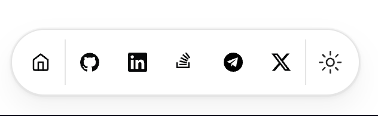

Memory Leaks in JavaScript
Daniel Danielecki
Bologna, Italy
April 7, 2025
Memory 101
- Allocation (Creating variables/objects)
- Usage (Using them in computations)
- Deallocation (Garbage Collector removes unreferenced data)
Definitions
What is a Memory Leak?
- In general; memory is allocated, but fails to release it when it’s no longer needed.
- In JavaScript; references to objects remain in memory even though they are no longer needed.
- Deeper; Garbage Collector (GC) cannot reclaim that memory.
Problems
- Best case; excessive memory consumption.
- Moving on; performance degradation.
- Worst case; application crashes.
Stack vs Heap
Stack vs Heap
- Memory region used for storing data in a computer's memory.
- They have different characteristics = are used for different purposes.
Stack
- Memory region used for storing data in a computer's memory.
- Stores variables and function calls in a sequential order.
- It is used for storing local variables, function parameters, and return addresses.
- Fixed-size.
Heap
- Memory region for storing data in computer's memory.
- Region of memory that stores dynamically allocated memory.
- It is used for storing objects, arrays, and other data structures that are created at runtime.
- Dynamic-size memory region that grows and shrinks as memory is allocated and deallocated.
Stack vs Heap
| Feature | Stack | Heap |
|---|---|---|
| Size | Fixed (limited) | Flexible and large |
| Speed | Very fast | Slower (dynamic allocation) |
| Purpose | Function calls, local variables, return addresses | Objects, arrays, closures, large dynamic data |
| Allocation | Automatic (push/pop) | Manual or via Garbage Collector |
Stack vs Heap
| Feature | Stack | Heap |
|---|---|---|
| Access | LIFO (Last In, First Out) | Random access |
| Structure | Well-structured, ordered | Unstructured, managed by GC |
| Typical Errors | Stack overflow (too deep recursion) | Memory leaks (if not properly cleaned) |
Stack vs Heap
- Can occur in both.
- More common in the heap due to the dynamic nature of memory allocation and deallocation.

Stack

Garbage
- Is not memory leak.
- Garbage will always be freed sooner or later by the garbage collector.
- If your application produces garbage too fast, the garbage collector may not free the memory used by garbage fast enough.
Garbage Collector
- Mark reachable objects.
- Sweep away unreachable objects.
- Free up memory.

Examples
Memory Leak
Memory Leak
const x = [];
function grow() {
const fragment = document.createDocumentFragment();
for (let i = 0; i < 10000; i++) {
fragment.appendChild(document.createElement("div"));
}
document.body.appendChild(fragment);
x.push("x".repeat(999999));
}
document.getElementById("grow").addEventListener("click", grow);
Global Variables
Global Variables: leak
let serverData = [];
function fetchData() {
serverData = [{
1: "one",
2: "two",
}];
// serverData = getDataFromServer();
}
fetchData();
console.log('my server data: ', serverData);
Global Variables: mitigation
let serverData = [];
function fetchData() {
serverData = [{
1: "one",
2: "two",
}];
// serverData = getDataFromServer();
}
fetchData();
console.log('my server data: ', serverData);
// Mitigation
function clearData() {
serverData = null;
}
clearData();
console.log('my server data: ', serverData);
Global Variables: leak
function createGlobalVar() {
globalVar = "I'm a global variable"; // Implicitly global
}
createGlobalVar();
console.log(window.globalVar) // Implicitly global check
Global Variables: mitigation
function createGlobalVar() {
let globalVar = "I'm a global variable"; // or const, or even var
}
createGlobalVar();
console.log(window.globalVar) // no longer implicitly global
Detached DOM Nodes
Detached DOM Nodes: leak
let detachedNode;
function createDetachedNode() {
const div = document.createElement("div");
document.body.appendChild(div);
document.body.removeChild(div); // Removed from DOM
detachedNode = div; // Still in memory
console.log("detachedNode before setting to null: ", detachedNode);
}
createDetachedNode();
Detached DOM Nodes: mitigation
let detachedNode;
function createDetachedNode() {
const div = document.createElement("div");
document.body.appendChild(div);
document.body.removeChild(div); // Removed from DOM
detachedNode = div; // Still in memory
console.log("detachedNode before setting to null: ", detachedNode);
}
createDetachedNode();
// fix
detachedNode = null; // Remove reference manually when no longer needed
console.log("detachedNode after setting to null: ", detachedNode);
Closures
Closures: leak
function outerFunction() {
let largeArray = new Array(1000000).fill('memory leak');
return function innerFunction() {
console.log(largeArray[0]);
};
}
const leak = outerFunction(); // `largeArray` is retained in memory.
Closures: mitigation
function outerFunction() {
let largeArray = new Array(1000000).fill("memory leak");
// Use the required value, not the entire object.
const importantValue = largeArray[0];
return function innerFunction() {
console.log(importantValue); // only this is kept in the memory, garbage collector will now free memory from largeArray.
};
}
const leak = outerFunction();
Event Listeners
Event Listeners: leak
// Event Listener
document.getElementById('button').addEventListener('click', function() {
console.log('Button clicked');
});
Event Listeners: mitigation
// Mitigation
const button = document.getElementById('button');
button.addEventListener('click', function() {
console.log('Button clicked');
});
// Remove the event listener when it's no longer needed
button.removeEventListener('click', function() {
console.log('Button clicked');
});
Timers and Intervals
Timers and Intervals: leak
let interval = setInterval(() => {
console.log('Interval');
}, 1000);
interval();
// Interval continues running indefinitely even after it's no longer needed
Timers and Intervals: mitigation
let interval = setInterval(() => {
console.log("Interval");
clearInterval(interval); // fix
}, 1000);
interval();
Tooling
Tooling for Detecting Memory Leaks
- Chrome DevTools
- MemLab
- Fuite
- WeakMap & WeakSet
Chrome DevTools
Several tools
- Heap Snapshots
- Allocation Timeline/Profiler
- Performance Tab
- Detached DOM Nodes
MemLab
CLI & Code
memlab run --scenario scenario.js --verbose --debug --headful
// initial page load's url
function url() {
return "http://your-web-app.com";
}
module.exports = { url };
Fuite
CLI
npx fuite http://your-web-app.comWeakMap & WeakSet
WeakMap & WeakSet
- Data structures.
- Allow you to hold references to objects without preventing their garbage collection.
- Useful for managing memory and preventing leaks.
WeakMap
- Collection of key/value pairs.
- Keys are objects and the values can be arbitrary values.
- Key objects are held weakly.
- Meaning they do not prevent garbage collection if there are no other references to the object.
WeakMap
let weakMap = new WeakMap();
let obj = {};
weakMap.set(obj, 'some value');
// When `obj` is no longer referenced elsewhere, it can be garbage collected
obj = null; // Now `obj` can be garbage collected, and the entry in the WeakMap is removed
WeakSet
- Collection of objects.
- Objects are held weakly.
- Meaning that if there are no other references to an object stored in a WeakSet, the object can be garbage collected.
WeakSet
let weakSet = new WeakSet();
let obj = {};
weakSet.add(obj);
// When `obj` is no longer referenced elsewhere, it can be garbage collected
obj = null; // Now `obj` can be garbage collected, and the entry in the WeakSet is removed
WeakMap & WeakSet
- Can help manage memory more effectively.
- Prevent memory leaks by ensuring that objects are not kept in memory longer than necessary.
Summary
- Memory leaks are a common problem in JavaScript.
- Excessive memory consumption, performance degradation, and application crashes.
- Stack and Heap, but are more common in the Heap.
- Global variables, detached DOM nodes, closures, event listeners, timers and intervals.
- Chrome DevTools, MemLab, Fuite, WeakMap and WeakSet.
- SPA vs MPA.
Contact
redirects to danieldanielecki.com
